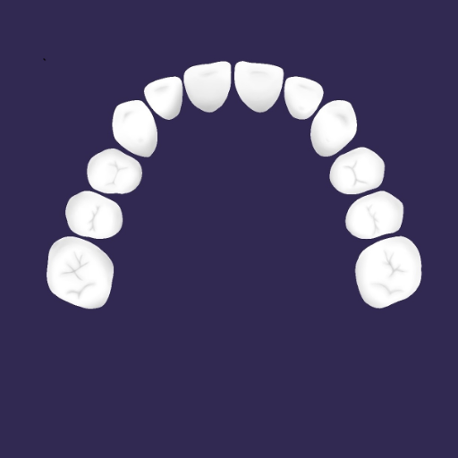

OrthoCalc
Calculadora Odontológica para análise de Moyers e Bolton / Wolford. Descubra a precisão das análises com nossa calculadora odontológica exclusiva. Ideal para estudantes e profissionais de odontologia, nosso app permite inserir valores dos dentes e bases ósseas, fornecendo cálculos detalhados para ambas as análises.